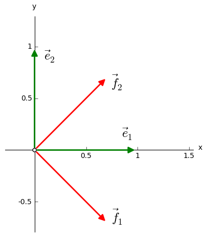

Przykłady problemów własnych¶
Operator w przestrzeni wektorów na płaszczyźnie¶
W dwuwymiarowej przestrzeni wektorów geometrycznych \(\,V\ \) z bazą \(\,\mathcal{B}=\{\vec{e}_1,\vec{e}_2\}\,,\ \) gdzie \(\\\) \(\,|\vec{e}_1|=|\vec{e}_2|=1,\ \ \vec{e}_1\perp\vec{e}_2\,,\ \) zadajemy operator liniowy \(\,F\ \) podając obrazy wektorów bazy \(\,\mathcal{B}:\)
Szukamy wektorów \(\ \vec{r}\,\in\,V\!\smallsetminus\!\{\vec{0}\}\ \) spełniających równanie \(\,F\vec{r}=\lambda\,\vec{r}\ \) dla pewnego \(\ \lambda\in R\,.\ \) Działając na te wektory, operator \(\,F\ \) nie zmienia ich kierunku, chociaż może zmienić długość lub zwrot. Pewną orientację w sytuacji daje program, który wyświetla kolejne wektory \(\ \vec{r}\ \) z pewnego zbioru oraz ich obrazy, eksponując przypadki, gdy \(\ F(\vec{r})\parallel\vec{r}\ \) (po uruchomieniu programu przygotowanie animacji trwa kilkadziesiąt sekund). \(\\\)
Problem własny dla operatora \(\,F\ \) rozwiążemy w tym przykładzie bezpośrednio, nie odwołując się do ogólnych wzorów z poprzedniej sekcji.
Podstawiając \(\ \vec{r}=\alpha_1\,\vec{e}_1+\alpha_2\,\vec{e}_2\ \) do równania własnego otrzymujemy kolejno:
Kombinacja niezależnych liniowo wektorów \(\ \vec{e}_1,\,\vec{e}_2\ \) bazy \(\ \mathcal{B}\ \) równa się wektorowi zerowemu wtedy i tylko wtedy, gdy jej współczynniki znikają:
Wzór (1) przedstawia jednorodny układ dwóch równań liniowych na niewiadome \(\ \alpha_1,\,\alpha_2\) \(\\\) z parametrem \(\ \lambda.\ \) Rozwiązania niezerowe: \(\ \alpha_1^2+\alpha_2^2\,>\,0\,,\ \) istnieją wtedy i tylko wtedy, gdy
Otrzymaliśmy w ten sposób dwie wartości własne operatora \(\,F:\quad\blacktriangleright\quad\lambda_1=1\,,\ \ \lambda_2=3\,.\ \)
Podstawienie \(\ \lambda=\lambda_1=1\ \) w (1) daje nieoznaczony układ równań \(\quad\begin{cases}\ \begin{array}{c} \alpha_1+\alpha_2\,=\,0 \\ \alpha_1+\alpha_2\,=\,0 \end{array}\end{cases}\)
którego rozwiązania mają ogólną postać: \(\quad\alpha_1=\alpha\,,\ \ \alpha_2=-\;\alpha\,,\ \ \alpha\in R.\)
Wektory własne odpowiadające tej wartości:
tworzą \(\,\) (wespół z wektorem zerowym \(\,\vec{0}\)) \(\,\) 1-wymiarową podprzestrzeń \(\,V_1\ \) przestrzeni \(\,V,\) \(\\\) generowaną przez wektor \(\,\vec{f}_1=\vec{e}_1-\vec{e}_2:\) \(\ V_1=L(\vec{f}_1)\,.\)
Podstawiając \(\ \lambda=\lambda_2=3\ \) w \(\,\) (1) \(\,\) otrzymujemy układ \(\quad\begin{cases}\ \begin{array}{r} -\ \alpha_1+\alpha_2\,=\,0 \\ \alpha_1-\alpha_2\,=\,0 \end{array}\end{cases}\)
o rozwiązaniach: \(\quad\alpha_1=\alpha_2=\alpha\,,\ \ \alpha\in R.\ \) Odpowiednie wektory własne
również tworzą \(\,\) (łącznie z wektorem zerowym) \(\,\) 1-wymiarową podprzestrzeń, \(\\\) generowaną tym razem przez wektor \(\,\vec{f}_2=\vec{e}_1+\vec{e}_2:\ \ V_2=L(\vec{f}_2)\,.\)
Zauważmy, że wektory \(\,\vec{f}_1\,,\ \vec{f}_2\ \,\) są wzajemnie prostopadłe oraz mają tę samą długość:
Dzieląc każdy z wektorów \(\ \vec{f}_1,\,\vec{f}_2\ \) przez jego długość:
otrzymamy parę \(\ (\vec{f}_1,\,\vec{f}_2)\ \) wzajemnie prostopadłych wektorów jednostkowych.
W ten sposób w przestrzeni \(\,V\ \) istnieją dwie bazy ortonormalne: wyjściowa baza \(\,\mathcal{B}=(\vec{e}_1,\vec{e}_2)\ \) oraz baza \(\,\mathcal{F}=(\vec{f}_1,\,\vec{f}_2)\ \) złożona z wektorów własnych operatora \(\,F:\)
{kind=link}
Uwagi i komentarze.
Operator \(\,F\ \) jest hermitowski, bo jego macierz w ortonormalnej bazie \(\,\mathcal{B}:\)
jest rzeczywista i symetryczna, a więc hermitowska. Ortogonalność należących do różnych wartości wektorów własnych \(\ \,\vec{f}_1\ \ \text{i}\ \ \vec{f}_2\ \,\) oraz istnienie ortonormalnej bazy \(\ \mathcal{F}\ \,\) przestrzeni \(\,V,\ \) złożonej z wektorów własnych operatora \(\,F,\ \,\) jest konsekwencją tej hermitowskości.
Wzór (2) przedstawia równanie charakterystyczne macierzy \(\,\boldsymbol{A}.\ \) Stąd, a także ze wzorów \(\,\) (3) \(\,\) i \(\,\) (4) \(\,\) wynika, że obydwie wartości własne, \(\,\) \(\ \lambda_1=1\ \ \text{i}\ \ \lambda_2=3\,,\ \ \) są algebraicznie i geometrycznie 1-krotne. To, że krotność algebraiczna każdej wartości własnej równa się jej krotności geometrycznej, jest również cechą operatorów hermitowskich.
Baza \(\,\mathcal{F}\ \) jest wynikiem obrotu bazy \(\,\mathcal{B}\ \) o kąt \(\,\pi/4.\ \) Jak należało oczekiwać, macierz przejścia między tymi dwiema ortonormalnymi bazami, wyznaczona przez związki (5):
jest unitarna (w tym wypadku: rzeczywista ortogonalna): \(\ \,\boldsymbol{S}^+\boldsymbol{S}=\boldsymbol{S}^{\,T}\boldsymbol{S}=\boldsymbol{I}_2\,.\)
Wzór (6) przedstawia macierz \(\,\boldsymbol{A}\ \) operatora \(\,F\ \) w wyjściowej bazie \(\ \mathcal{B}.\) \(\\\) Wyliczymy teraz dwoma sposobami macierz \(\,\boldsymbol{F}=[\varphi_{ij}]\ \) tego operatora w bazie \(\ \mathcal{F}.\)
Według wzorów transformacyjnych dla przejścia od bazy \(\,\mathcal{B}\ \) do bazy \(\,\mathcal{F}:\)
\[\begin{split}\boldsymbol{F}\ =\ \boldsymbol{S}^{-1}\boldsymbol{A}\,\boldsymbol{S}\ =\ \boldsymbol{S}^T\boldsymbol{A}\,\boldsymbol{S}\ \,=\ \, \textstyle\frac12\ \, \left[\begin{array}{rr} 1 & -1 \\ 1 & 1 \end{array}\right]\ \left[\begin{array}{cc} 2 & 1 \\ 1 & 2 \end{array}\right]\ \left[\begin{array}{rr} 1 & 1 \\ -1 & 1 \end{array}\right]\ =\ \left[\begin{array}{cc} 1 & 0 \\ 0 & 3 \end{array}\right]\,.\end{split}\]To samo dają wzory dla elementów macierzowych operatora w bazie ortonormalnej:
\[\varphi_{11}\,=\,\boldsymbol{f}_1\cdot F\boldsymbol{f}_1\,=\, 1\ \ \boldsymbol{f}_1\cdot\boldsymbol{f}_1\,=\,1\,, \qquad \varphi_{12}\,=\,\boldsymbol{f}_1\cdot F\boldsymbol{f}_2\,=\, 3\ \ \boldsymbol{f}_1\cdot\boldsymbol{f}_2\,=\,0\,,\]\[\varphi_{21}\,=\,\boldsymbol{f}_2\cdot F\boldsymbol{f}_1\,=\, 1\ \ \boldsymbol{f}_2\cdot\boldsymbol{f}_1\,=\,0\,, \qquad \varphi_{22}\,=\,\boldsymbol{f}_2\cdot F\boldsymbol{f}_2\,=\, 3\ \ \boldsymbol{f}_2\cdot\boldsymbol{f}_2\,=\,3\,.\]
Macierz operatora \(\,F\ \) w ortonormalnej bazie \(\ \mathcal{F}\ \) złożonej z jego wektorów własnych jest diagonalna, z wartościami własnymi na przekątnej.
Dygresja.
Każdy wektor \(\,\vec{r}\ \) przestrzeni \(\,V\ \) wektorów geometrycznych na płaszczyźnie można zapisać jednoznacznie w postaci kombinacji liniowej wektorów bazowych \(\,\vec{f}_1,\,\vec{f}_2:\)
Ale \(\ \,\beta_1\,\vec{f}_1\in V_1\,,\ \ \beta_2\,\vec{f}_2\in V_2\,,\ \,\) gdzie \(\ \,V_1=L(\vec{f}_1)\ \ \text{i}\ \ \,V_2=L(\vec{f}_2)\ \,\) są podprzestrzeniami wektorów własnych operatora \(\,F\ \) odpowiednio dla wartości \(\ \lambda_1\ \ \text{i}\ \ \lambda_2.\ \,\) Wobec tego dla każdego wektora \(\,\vec{r}\in V\ \) zachodzi jednoznaczny rozkład
Definicja.
Niech \(\ V_1\,,\ \,V_2\ \,\) będą podprzestrzeniami przestrzeni wektorowej \(\,V.\ \) \(\\\) Jeżeli każdy wektor \(\,x\in V\ \) można przedstawić jednoznacznie w postaci \(\,x_1+x_2\,,\ \) gdzie \(\,x_1\in V_1\ \ \text{i}\ \ x_2\in V_2\,,\ \) to mówimy, że przestrzeń \(\,V\ \) rozkłada się na sumę prostą swoich podprzestrzeni \(\,V_1\ \ \text{i}\ \ V_2\,,\ \) co zapisujemy: \(\ \ V\,=\,V_1\,\oplus\,V_2\,.\)
W naszym przykładzie przestrzeń \(\ V,\ \) w której działa operator \(\,F,\ \) rozkłada się na sumę prostą podprzestrzeni \(\ V_1\ \ \text{i}\ \ V_2\,,\ \) odpowiadających dwóm wartościom własnym \(\ \lambda_1\ \ \text{i}\ \ \lambda_2\ \) tego operatora.
Transpozycja macierzy kwadratowych 2. stopnia¶
Definiujemy operator transpozycji \(\ T\ \) określony na algebrze \(\ M_2(R)\) \(\\\) rzeczywistych kwadratowych macierzy 2. stopnia:
Ze względu na bijektywność i liniowość, \(\,\) operator \(\,T\ \) jest automorfizmem algebry \(\,M_2(R).\)
Problem własny operatora \(\,T\ \) rozwiążemy stosując schemat postępowania z poprzedniej sekcji.
0.) Konstrukcja macierzy \(\,\boldsymbol{A}=M_{\mathcal{B}}(T)\ \) automorfizmu \(\,T\ \) w bazie \(\ \mathcal{B}=(\boldsymbol{e}_1,\boldsymbol{e}_2,\boldsymbol{e}_3,\boldsymbol{e}_4)\,,\ \) gdzie
Jeżeli obrazy kolejnych macierzy z bazy \(\ \mathcal{B}\ \) przedstawimy w tej samej bazie \(\ \mathcal{B}:\)
to \(\ j\)-ta kolumna macierzy \(\,\boldsymbol{A}\ \) składa się ze współrzędnych macierzy \(\,T\boldsymbol{e}_j\,,\ \ j=1,2,3,4:\)
Teraz równanie własne dla operatora \(\,T:\)
przyjmuje postać jednorodnego problemu liniowego:
1.) Wyliczenie wartości własnych jako pierwiastków równania charakterystycznego.
Wartości własne (i ich krotności algebraiczne) są więc następujące:
2.) Wyznaczenie wektorów (tutaj: macierzy) własnych.
Wstawiając \(\,\lambda=\lambda_1=1\ \) do równania (8) otrzymujemy
Rozwiązanie ma postać: \(\quad\alpha_1=\alpha\,,\ \ \alpha_2=\alpha_3=\beta\,,\ \ \alpha_4=\gamma\,,\quad \alpha,\,\beta,\,\gamma\in R.\)
Macierze własne operatora \(\,T\ \) dla wartości \(\,\lambda_1=1\,:\)
tworzą \(\,\) (po dodaniu macierzy zerowej) \(\,\) trójwymiarową podprzestrzeń \(\ V_1\ \) przestrzeni \(\\\) wektorowej \(\ V=M_2(R),\ \) generowaną przez liniowo niezależne macierze
Wartość własna \(\ \lambda_1=1\ \) jest zatem algebraicznie i geometrycznie 3-krotna.
Podstawienie \(\ \lambda=\lambda_2=-1\ \) do równania (8) daje
Stąd \(\ \ \alpha_1=\alpha_4=0\,,\ \ \alpha_2=-\ \alpha_3=\delta\,,\ \ \delta\in R\,,\ \,\) a macierze własne dla wartości \(\ \lambda_2=-1:\)
tworzą \(\,\) (razem z macierzą zerową) \(\,\) 1-wymiarową podprzestrzeń \(\ V_{-1}=L(\boldsymbol{t}_4)\,.\) \(\\\) Krotność geometryczna wartości własnej \(\ \lambda_2\ \) równa się jej krotności algebraicznej i wynosi 1.
Uwagi i komentarze.
Macierze własne \(\ \boldsymbol{t}_1,\,\boldsymbol{t}_2,\,\boldsymbol{t}_3,\,\boldsymbol{t}_4\ \) są liniowo niezależne. \(\\\) Rzeczywiście, jeżeli ich kombinacja liniowa równa się macierzy zerowej:
to, wykonując działania po lewej stronie równości, otrzymujemy
Układ \(\ \mathcal{T}=(\boldsymbol{t}_1,\boldsymbol{t}_2,\boldsymbol{t}_3,\boldsymbol{t}_4)\ \) jest więc bazą algebry \(\,M_2(R),\ \) alternatywną względem wyjściowej bazy \(\ \mathcal{B}=(\boldsymbol{e}_1,\boldsymbol{e}_2,\boldsymbol{e}_3,\boldsymbol{e}_4)\,.\ \) Związki między wektorami tych baz:
dają macierz przejścia \(\,\boldsymbol{S}\ \) od bazy \(\,\mathcal{B}\ \) do bazy \(\,\mathcal{T}:\)
Wzór \(\,\) (7) \(\,\) przedstawia macierz \(\,\boldsymbol{A}\ \) operatora \(\,T\ \) w wyjściowej bazie \(\ \mathcal{B}.\) \(\\\) Macierz \(\ \boldsymbol{T}=[\tau_{ij}]\ \) operatora \(\ T\ \) w bazie \(\ \mathcal{T}\ \) wyliczymy dwoma sposobami.
Z definicji, \(\,\) elementy \(\,\tau_{ij}\ \) macierzy \(\,\boldsymbol{T}\ \) określone są przez związki
\[T\ \boldsymbol{t}_j\ =\ \tau_{1j}\ \boldsymbol{t}_1\ +\ \tau_{2j}\ \boldsymbol{t}_2\ +\ \tau_{3j}\ \boldsymbol{t}_3\ +\ \tau_{4j}\ \boldsymbol{t}_4\,,\qquad j=1,2,3,4.\]Biorąc pod uwagę, że \(\,\boldsymbol{t}_i\,,\ i=1,2,3,4,\ \) są macierzami własnymi operatora \(\,T,\ \) mamy:
\[\begin{alignat*}{6} T\ \boldsymbol{t}_1 & {\ \,} = {\ \,} & \boldsymbol{t}_1 & {\ \,} = {\ \,} & 1\cdot\boldsymbol{t}_1 {\ } + {\ } 0\cdot\boldsymbol{t}_2 {\ } + {\ } 0\cdot\boldsymbol{t}_3 {\ } + {\ } 0\cdot\boldsymbol{t}_4 \,, \\ T\ \boldsymbol{t}_2 & {\ \,} = {\ \,} & \boldsymbol{t}_2 & {\ \,} = {\ \,} & 0\cdot\boldsymbol{t}_1 {\ } + {\ } 1\cdot\boldsymbol{t}_2 {\ } + {\ } 0\cdot\boldsymbol{t}_3 {\ } + {\ } 0\cdot\boldsymbol{t}_4 \,, \\ T\ \boldsymbol{t}_3 & {\ \,} = {\ \,} & \boldsymbol{t}_3 & {\ \,} = {\ \,} & 0\cdot\boldsymbol{t}_1 {\ } + {\ } 0\cdot\boldsymbol{t}_2 {\ } + {\ } 1\cdot\boldsymbol{t}_3 {\ } + {\ } 0\cdot\boldsymbol{t}_4 \,, \\ T\ \boldsymbol{t}_4 & {\ \,} = {\ \,} & -\ \boldsymbol{t}_4 & {\ \,} = {\ \,} & 0\cdot\boldsymbol{t}_1 {\ } + {\ } 0\cdot\boldsymbol{t}_2 {\ } + {\ } 0\cdot\boldsymbol{t}_3 {\ } - {\ } 1\cdot\boldsymbol{t}_4 \,. \end{alignat*}\]Macierz \(\,\boldsymbol{T}\ \) jest więc diagonalna, z wartościami własnymi operatora \(\,T\ \) na przekątnej:
\[\begin{split}\boldsymbol{T}\ =\ M_{\mathcal{T}}(T)\ =\ \left[\begin{array}{rrrr} 1 & 0 & 0 & 0 \\ 0 & 1 & 0 & 0 \\ 0 & 0 & 1 & 0 \\ 0 & 0 & 0 & -1 \end{array}\right]\,.\end{split}\]- Wzory transformacyjne dla przejścia od bazy \(\ \mathcal{B}\ \) do bazy \(\ \mathcal{T}\ \) dają: \(\ \ \boldsymbol{T}\ =\ \boldsymbol{S}^{-1}\boldsymbol{A}\,\boldsymbol{S}\,.\)W rachunkach macierzowych wykorzystamy pakiet Sage:
sage: A = matrix(QQ,[[1,0,0,0], ... [0,0,1,0], ... [0,1,0,0], ... [0,0,0,1]]) sage: S = matrix(QQ,[[1,0,0, 0], ... [0,1,0, 1], ... [0,1,0,-1], ... [0,0,1, 0]]) sage: S.I*A*S [ 1 0 0 0] [ 0 1 0 0] [ 0 0 1 0] [ 0 0 0 -1]
Powtarzając argumentację z poprzedniego przykładu można stwierdzić, że przestrzeń \(\ M_2(R)\ \) rozkłada się na sumę prostą podprzestrzeni \(\,V_1=L(\boldsymbol{t}_1,\boldsymbol{t}_2,\boldsymbol{t}_3)\ \) macierzy symetrycznych oraz podprzestrzeni \(\,V_{-1}=L(\boldsymbol{t}_4)\ \) macierzy antysymetrycznych: